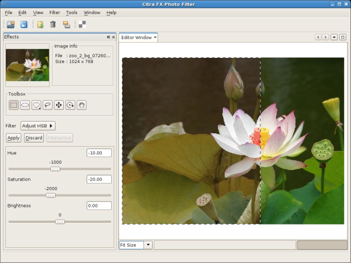
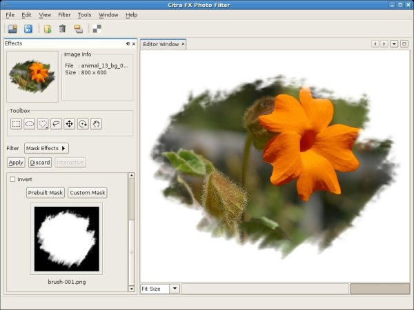
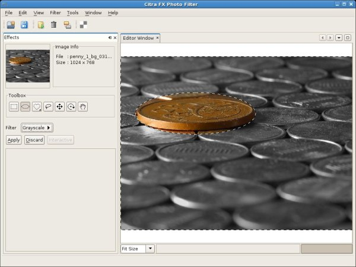

|
Tonny Kohar |
Tonny's Hot Links: |
Citra FX is a filter effects tool for digital photos or images. It allows anyone, regardless of experience, to give unique artisitic looks to their digital images. In other words, it is a dark room for digital photos.
Since Citra FX is not a general purpose photo editing software, like industry leader Adobe Photosho or the GIMP open source graphics package, the user interface flow is totally different. It does not have a complex layer tool, brush, and so on. Instead it tries to simplify the user experience radically. This simplistic user interface experience allows anyone, with or without graphics expertise, to use Citra FX to produce impressive photo effects.

Using the NetBeans Platform for the base framework, JHLabs for the image filter math, and JDK 6, Tonny Kohar and his team have been able able to produce Citra FX as a cross platform tool, making it easy to develop and extend via plugins, with advanced graphics filtering capabilities.
I am the product manager for Citra FX. I have been with the project since the beginning of April 2007.
This is also the first of our products that utilizes NetBeans Platform 6 features, such as the new NbPreferences class in the Utilities API, the Command Line Parsing API, and the new positioning attribute in the layer.xml file.
If you still remember our last interview, at that time I was learning and appreciating the NetBeans Platform Lookup package, which is part of the Utilities API. This time I've learned a lot about NetBeans Platform branding. We can now totally brand our application, from the splash screen, to the About dialog, even all the way down to the updater splash screen. So, now we can comply completely with our branding specification!
As I go along with our projects, I usually write blog entries about things I've learned. The blog is here:
http://blogs.kiyut.com/tonny/category/java/netbeans/
I also really appreciate the NetBeans Platform backward compatibility design, it is excellent and well thought through. Initially, we developed Citra FX on top of NetBeans Platform 5.5.1, then in the middle period we switched to NetBeans Platform 6 M10, NetBeans Platform 6 Beta 1, and then NetBeans 6 RC1. Each time, the migration process ran very smoothly. Things that surprised me was there were no errors at all, only warnings (which were easy to fix), although it is a migration from the NetBeans 5.5.1 to 6 series. This is a real productivity boost in the project management area.
We also appreciate the NetBeans Platform 6 Command Line Parsing API and the NbPreferences API. Only a few lines of code added and voila our application suddenly has a new feature.
This is how we implement Command Line Parsing API to parse command line argument to automatically open file when the application started.
citra myphoto.jpg citra -open myphoto.jpg citra -o myphoto.jpg
public class CitraOptionProcessor extends OptionProcessor {
private Option openOption = Option.defaultArguments();
private Option openOption2 = Option.additionalArguments('o', "open");
public Set<Option< getOptions() {
HashSet<Option> set = new HashSet<Option>();
set.add(openOption);
set.add(openOption2);
return set;
}
public void process(Env env, Map values) throws CommandException {
List<String> filenameList = new ArrayList<String>();
Object obj = values.get(openOption);
if (obj != null) {
filenameList.addAll(Arrays.asList((String[]) obj));
}
obj = values.get(openOption2);
if (obj != null) {
filenameList.addAll(Arrays.asList((String[]) obj));
}
if (filenameList.isEmpty()) {
return;
}
File file = new File(filenameList.get(0));
if (!file.isAbsolute()) {
file = new File(env.getCurrentDirectory(), filenameList.get(0));
}
if (!file.exists() || !ImageUtilities.isFileImage(file)) {
return;
}
try {
// replace the below line with your own, for example DataObject open cookie:
//FXContextManager.getInstance().open(file);
} catch (OutOfMemoryError ex) {
String msg = Application.getMessage("MSG_OutOfMemoryError.Text");
NotifyDescriptor nd = new NotifyDescriptor.Message(msg, NotifyDescriptor.ERROR_MESSAGE);
DialogDisplayer.getDefault().notify(nd);
} catch (Exception ex) {
NotifyDescriptor nd = new NotifyDescriptor.Message(ex.getMessage(), NotifyDescriptor.ERROR_MESSAGE);
DialogDisplayer.getDefault().notify(nd);
}
}
}
To use the Command Line Parsing API, you basically need to do the following:
Of course! Here are two:


Citra FX Photo Filter is shareware, so you are free to try it. However, if you decide to keep the software, a payment is required. Note that if you are a non-profit, non-commercial, or educational institution, you can get a license for free, just contact our sales department (sales at kiyut dot com).
In the short term, we would like to upgrade Citra FX to NetBeans 6 Final Release (currently it is using NetBeans 6 RC1) and add more image filters.
The latest release is available at http://www.kiyut.com/products/citra/index.html under the download section.
We are glad that we are using NetBeans Platform, it really helped us a lot during the development and got us faster to market. The NetBeans Platform lets us focus on our application instead of wasting resources on developing our own framework.